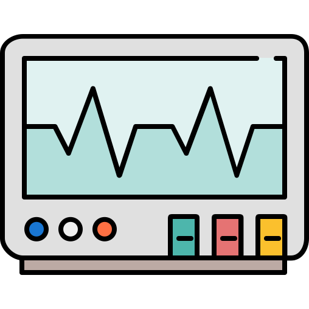
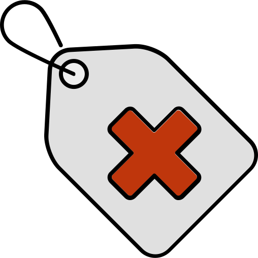

<ion-header>
  <ion-toolbar>
    <ion-buttons slot="start">
      <ion-back-button></ion-back-button>
    </ion-buttons>
    <ion-title> Procedures </ion-title>
  </ion-toolbar>
</ion-header>

<ion-content [fullscreen]="true">
  <ion-row>
    <ion-col width-50 style="text-align: center">
      <ion-button
        color="light"
        expand="block"
        routerLink="upcoming-procedures"
        class="button1"
      >
        
        <span>Upcoming Procedures</span>
      </ion-button>
    </ion-col>
  </ion-row>

  <ion-row>
    <ion-col width-50 style="text-align: center">
      <ion-button
        color="light"
        routerLink="past-procedures"
        expand="block"
        class="button2"
        >
        <span>Past Procedures</span>
      </ion-button>
    </ion-col>
  </ion-row>
</ion-content>
